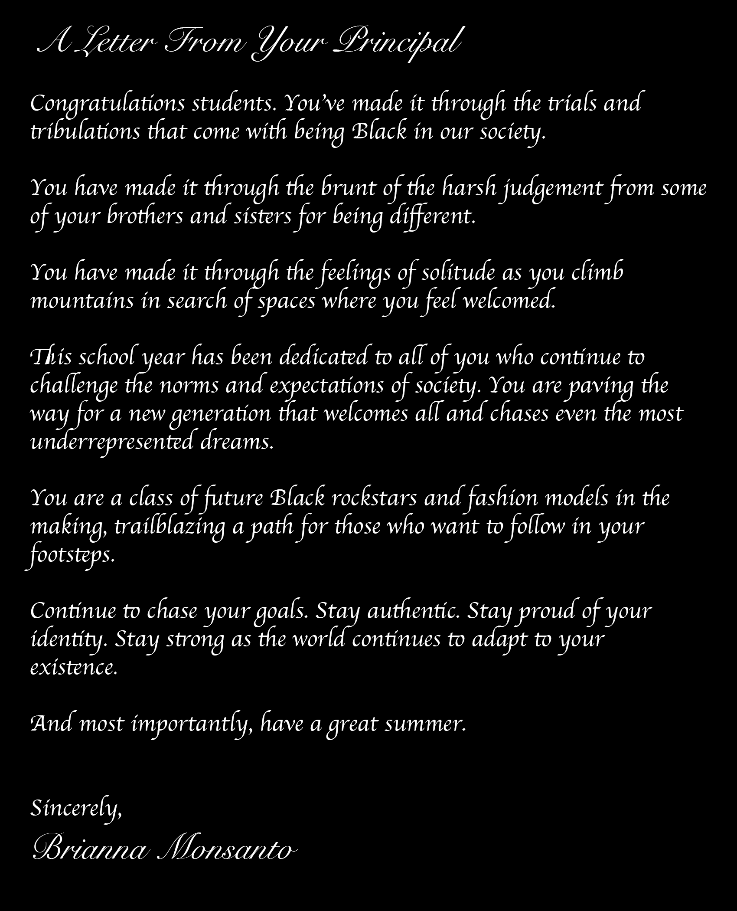

<!DOCTYPE html>
<html>

</html>

<head>
    <meta charset="utf-8">
    <meta name="viewport" content="width=device-width, initial-scale=1" />
    <link rel="stylesheet" type="text/css" href="styles.css" />

</head>

<body></body>

          <div class="container">
              
          </div> 
    
        <div class="row">
            <div class="column">
              
            </div>
            <div class="column">
              
            </div>
            <div class="column">
              
            </div>
          </div>
        </div>


</div>
</div>

<div class="container">

    <p> Black New Yorkers were also asked key questions about how their skin tones has played a role in their everyday life. </p>
              
    <p> <strong>How did your skin tone plan out in your family dynamic? Did family members with different skin tones get treated differently? Were you treated differently? </strong>  </p>

    <p> "Definitely. You get certain looks and people tend to assume things about you especially when shopping." Avery Richardson, 26 </p>

    <p> " My family didn’t really treat me differently, but I was teased for my darker skin tone by my cousins & siblings growing up." Jimmie McKinney, 25 </p>

    <p> "When I would go to Martinique every summer to visit my mom's family, people would always talk about the different "types" of black people. They had names for people who had loose curls and light eye, dark skin and coiled eyes, tan skin and smooth hair etc. They all had neutral connotations. It's sort of a remnant of slavery-keeping classifications of different mixes etc." Aurélie Muntzel, 27 </p>
 
    <p> "I'm the only one in my family that has my skin tone since I am mixed and only have half siblings. Never felt treated different, but always felt different than my brothers and sisters." Rehoboth Hines, 25 </p>

  <p> <strong> Did colorism play a role in your life growing up? How did it play a role in your life? </strong>  </p>

<p>"I am a black male, and I feel that colorism may not be a big issue as it is for black females." Jamil M Lane, 35 </p>

<p> "It was definitely present when I was younger with teasing and bullying. Darkskin wasn’t something many black people, I knew, wanted to be." Jimmie McKinney, 25 </p>

<p> "Yes, I have been treated differently for being black. And then at the same time, I’ve been treated fdifferently for not being black enough." Jermaine Piper, 21 </p>

<p> "You get certain looks and people tend to assume things about you especially when shopping." Avery Richardson, 26 </p>

<p> I would say I witnessed colorism towards my darker peers. It made me very aware of how my skin tone could influence how I was treated. " Brianna Monsanto, 22 </p>

<p> "Hearing men say ognorant things like “I can’t do dark skin women”." Gina, 21</p>

<p> <strong>  What is one moment that made you shaped your point of view on what it means to be Black in NYC? Is your point of view positive or negative?  </strong>  </p>

<p> "To be black in NYC is empowering because there are so many people just like me here, being a boss bitch." Jermaine Piper, 21 </p>

<p> "To be black doesn't mean one thing, or designate you to a particular mindset or experience. I think being black is just a very individual experience. In NYC being black is just taking a place inside the mosaic of culture that's all around us. NYC is a ever expanding puzzle. There is a lot of room for inclusion,  no matter if you are black, white, Asian or any other race." Cheryl Anne Harper, 45 </p>

<p> "I would say I witnessed colorism towards my darker peers. It made me very aware of how my skin tone could influence how I was treated." Brianna Monsanto, 22  </p>

<p>  I have been treated differently for being black, and then at the same time, I’ve been treated differently for not being black enough." Jermaine Piper, 21</p>

<p> Colorism "definitely played a role in dating and who was treated well socially in schools." Avery Richardson, 26  </p>

<p> Every Black person had a unique experience on life has been like for them while being Black. These different experiences have shaped how we embraced our Blackness and the city that has helped shape us. New York City is one of the most diverse places in the world, and the diversity amongst the answeers given serves as a reminder that even the way Black people perceive skin tone is not monolithic. </p>
</div> 
<script src="main.js"></script>

</body>
</html>
